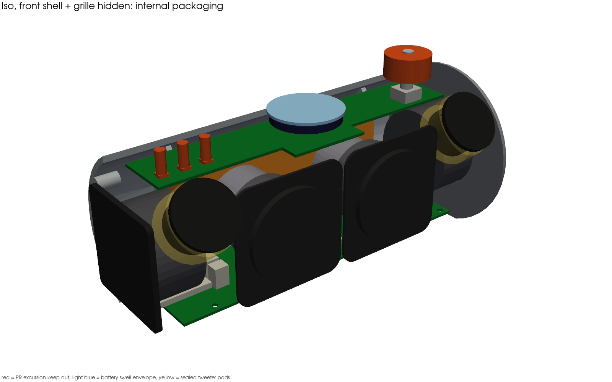
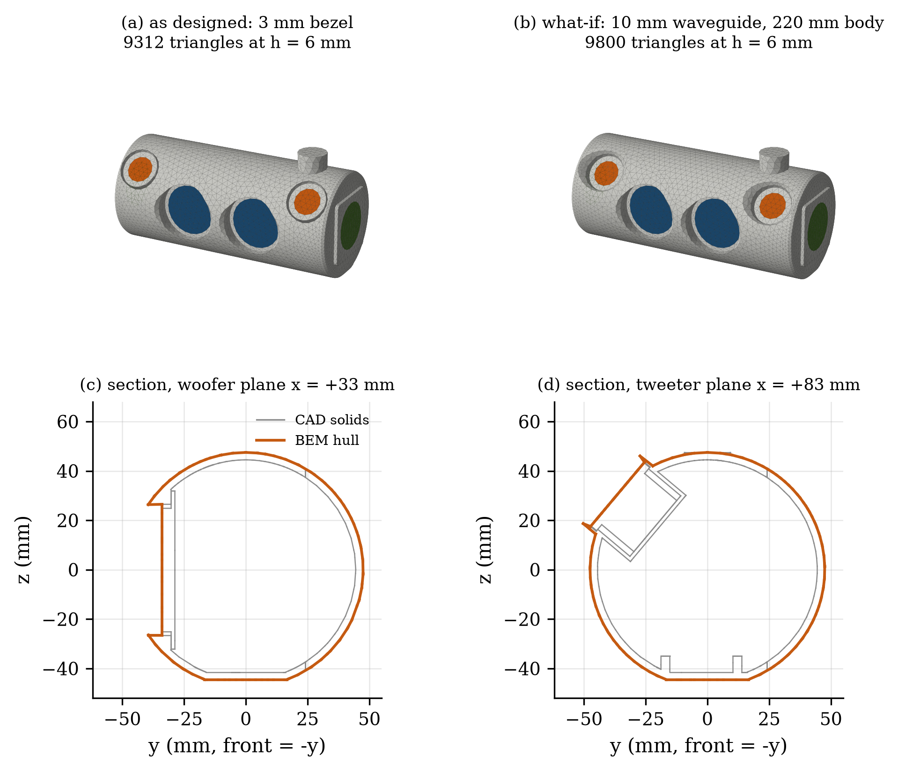
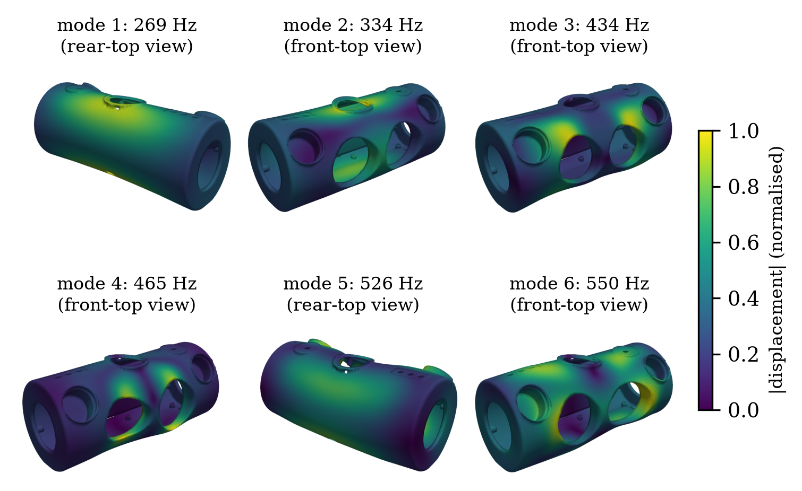
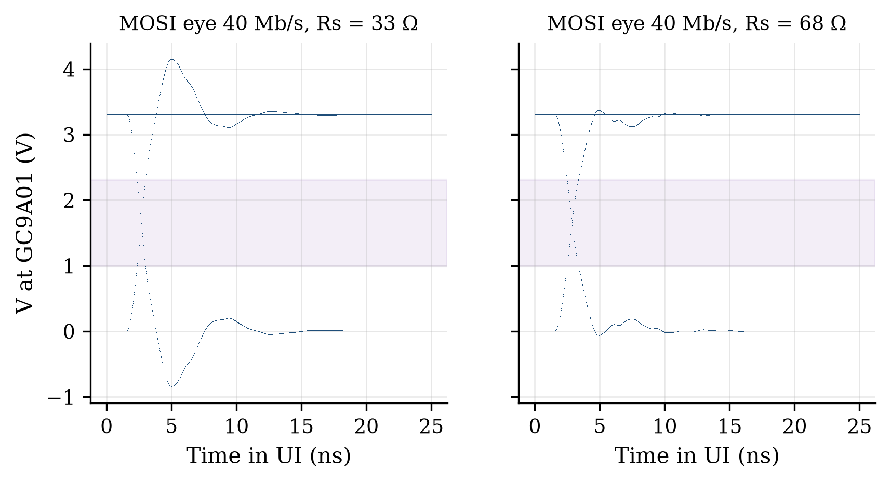

<title>Speaker simulations: what each one tests</title>
<meta name="claude:viewport-fit-sides" content="cover">
<link rel="preconnect" href="https://fonts.googleapis.com">
<link rel="preconnect" href="https://fonts.gstatic.com" crossorigin>
<link rel="stylesheet" href="https://fonts.googleapis.com/css2?family=Instrument+Sans:wght@400;500;600;700&family=IBM+Plex+Mono:wght@400;500&display=swap">
<style>
/* Layout: one reading column of simulation "data sheets"; each sheet has the same anatomy:
   head (ID, question, verdict) -> brief (facts + mechanism diagram) -> bench (controls, charts, readouts). */
:root {
  --bg: #f3f5f3;
  --surface: #fcfcfb;
  --surface-2: #eceeeb;
  --ink: #101413;
  --ink-2: #4c5350;
  --muted: #7d8581;
  --rule: #d9ddd9;
  --grid: #e6e9e6;
  --accent: #0c6a64;
  --accent-soft: rgba(12, 106, 100, 0.10);
  --s1: #2a78d6; --s2: #eb6834; --s3: #1baf7a; --s4: #eda100; --s5: #e87ba4; --s7: #6250d6;
  --good: #0a7f0a; --warn: #b07800; --crit: #c23434;
  --band: rgba(42, 120, 214, 0.08);
  --plate: #ffffff;
  --f-display: "Instrument Sans", "Helvetica Neue", Arial, sans-serif;
  --f-body: "Instrument Sans", "Helvetica Neue", Arial, sans-serif;
  --f-mono: "IBM Plex Mono", ui-monospace, "SF Mono", Menlo, monospace;
  --step--1: 0.8125rem; --step-0: 0.95rem; --step-1: 1.125rem; --step-2: 1.45rem; --step-3: 2.1rem; --step-4: 2.9rem;
}
@media (prefers-color-scheme: dark) {
  :root:not([data-theme="light"]) {
    --bg: #111413; --surface: #1a1a19; --surface-2: #232625; --ink: #eef0ed; --ink-2: #c0c6c2; --muted: #8e9692;
    --rule: #2f3432; --grid: #262a28; --accent: #5cc8bd; --accent-soft: rgba(92, 200, 189, 0.13);
    --s1: #3987e5; --s2: #d95926; --s3: #199e70; --s4: #c98500; --s5: #d55181; --s7: #9085e9;
    --good: #2fb52f; --warn: #fab219; --crit: #e66767; --band: rgba(57, 135, 229, 0.12); --plate: #f4f4f2;
    color-scheme: dark;
  }
}
:root[data-theme="dark"] {
  --bg: #111413; --surface: #1a1a19; --surface-2: #232625; --ink: #eef0ed; --ink-2: #c0c6c2; --muted: #8e9692;
  --rule: #2f3432; --grid: #262a28; --accent: #5cc8bd; --accent-soft: rgba(92, 200, 189, 0.13);
  --s1: #3987e5; --s2: #d95926; --s3: #199e70; --s4: #c98500; --s5: #d55181; --s7: #9085e9;
  --good: #2fb52f; --warn: #fab219; --crit: #e66767; --band: rgba(57, 135, 229, 0.12); --plate: #f4f4f2;
  color-scheme: dark;
}
* { box-sizing: border-box; }
body { background: var(--bg); color: var(--ink); font-family: var(--f-body); font-size: var(--step-0); line-height: 1.55; -webkit-font-smoothing: antialiased; }
body::before { content: ""; position: fixed; inset: 0 0 auto; height: env(safe-area-inset-top, 0px); z-index: 10; background: var(--bg); }
.wrap { max-width: 1160px; margin: 0 auto; padding-left: max(16px, env(safe-area-inset-left, 0px)); padding-right: max(16px, env(safe-area-inset-right, 0px)); }
a { color: var(--accent); }
h1, h2, h3 { font-family: var(--f-display); text-wrap: balance; margin: 0; line-height: 1.15; }
code, .mono { font-family: var(--f-mono); font-size: 0.92em; }
:focus-visible { outline: 2px solid var(--accent); outline-offset: 2px; }
.num { font-variant-numeric: tabular-nums; }

/* ---------- hero */
.hero { padding-block: 2.6rem 1.4rem; display: grid; gap: 1.6rem; grid-template-columns: minmax(0, 1.25fr) minmax(0, 1fr); align-items: end; }
.eyebrow { font-family: var(--f-mono); font-size: var(--step--1); letter-spacing: 0.06em; text-transform: uppercase; color: var(--accent); }
.hero h1 { font-size: var(--step-4); font-weight: 600; letter-spacing: -0.02em; margin-top: 0.4rem; }
.hero p.lead { font-size: var(--step-1); color: var(--ink-2); max-width: 62ch; margin: 0.9rem 0 0; }
.hero-fig { margin: 0; background: var(--plate); border-radius: 6px; overflow: hidden; border: 1px solid var(--rule); }
.hero-fig img { display: block; width: 100%; height: auto; }
.hero-fig figcaption { font-size: var(--step--1); color: #4c5350; padding: 0.4rem 0.7rem 0.55rem; background: var(--plate); }
.meta { display: flex; flex-wrap: wrap; gap: 0.4rem 1.4rem; font-family: var(--f-mono); font-size: var(--step--1); color: var(--ink-2); margin-top: 1.1rem; }

/* ---------- overview table */
.overview { margin-block: 0.6rem 2.4rem; }
.overview h2 { font-size: var(--step-1); font-weight: 600; margin-bottom: 0.6rem; }
.tbl-scroll { overflow-x: auto; }
table { border-collapse: collapse; width: 100%; font-size: var(--step--1); }
th, td { text-align: left; vertical-align: top; padding: 0.45rem 0.6rem; border-bottom: 1px solid var(--rule); }
th { font-weight: 600; color: var(--ink-2); font-size: 0.75rem; letter-spacing: 0.05em; text-transform: uppercase; }
td.id a { font-family: var(--f-mono); font-weight: 500; text-decoration: none; }
.overview td:nth-child(2) { min-width: 15rem; }
.overview td:nth-child(4) { min-width: 16rem; }

/* ---------- sticky index */
.index { position: sticky; top: env(safe-area-inset-top, 0px); z-index: 5; background: var(--bg); border-bottom: 1px solid var(--rule); }
.index .wrap { display: flex; gap: 0.3rem; overflow-x: auto; padding-block: 0.5rem; scrollbar-width: thin; }
.index a { flex: none; font-family: var(--f-mono); font-size: 0.78rem; text-decoration: none; color: var(--ink-2); padding: 0.2rem 0.55rem; border-radius: 4px; border: 1px solid transparent; }
.index a:hover { border-color: var(--rule); color: var(--ink); }
.index a.on { background: var(--accent-soft); color: var(--accent); border-color: transparent; }
.index .grp { flex: none; font-size: 0.7rem; color: var(--muted); align-self: center; padding: 0 0.3rem 0 0.6rem; text-transform: uppercase; letter-spacing: 0.06em; }
.index .grp:first-child { padding-left: 0; }

/* ---------- simulation sheet */
.sim { padding-block: 2.6rem 1rem; border-bottom: 1px solid var(--rule); scroll-margin-top: 3rem; }
.sim-id { display: flex; flex-wrap: wrap; align-items: baseline; gap: 0.5rem 0.9rem; font-family: var(--f-mono); font-size: var(--step--1); color: var(--ink-2); }
.sim-id .tag { font-size: 0.95rem; font-weight: 500; color: var(--accent); border: 1.5px solid currentColor; border-radius: 4px; padding: 0 0.4rem; }
.sim h2 { font-size: var(--step-3); font-weight: 600; letter-spacing: -0.015em; margin-top: 0.55rem; max-width: 30ch; }
.verdict { font-size: var(--step-1); color: var(--ink-2); max-width: 70ch; margin: 0.6rem 0 0; }
.verdict strong { color: var(--ink); font-weight: 600; }
.brief { display: grid; grid-template-columns: minmax(0, 1fr) minmax(0, 1fr); gap: 1.4rem 2rem; margin-top: 1.5rem; }
.facts { margin: 0; display: grid; gap: 0.75rem; }
.facts > div { display: grid; grid-template-columns: 7.5rem minmax(0, 1fr); gap: 0.8rem; padding-bottom: 0.75rem; border-bottom: 1px solid var(--rule); }
.facts > div:last-child { border-bottom: 0; }
.facts dt { font-size: 0.72rem; font-weight: 600; letter-spacing: 0.06em; text-transform: uppercase; color: var(--muted); padding-top: 0.2rem; }
.facts dd { margin: 0; font-size: 0.9rem; min-width: 0; }
.facts dd.changed { color: var(--ink); }
.facts dd.changed::before { content: "Design change"; display: inline-block; font-family: var(--f-mono); font-size: 0.68rem; letter-spacing: 0.04em; text-transform: uppercase; color: var(--accent); background: var(--accent-soft); border-radius: 3px; padding: 0 0.35rem; margin-right: 0.45rem; }
.diagram { margin: 0; min-width: 0; align-self: start; }
.diagram .svgbox { overflow-x: auto; background: var(--surface); border: 1px solid var(--rule); border-radius: 6px; padding: 0.6rem; color: var(--ink); }
.diagram svg { display: block; width: 100%; height: auto; min-width: 440px; }
.diagram svg text { font-family: var(--f-body); }
.diagram figcaption { font-size: var(--step--1); color: var(--ink-2); margin-top: 0.45rem; }
.plate { margin: 0; }
.plate .img { background: var(--plate); border-radius: 6px; border: 1px solid var(--rule); overflow: hidden; }
.plate img { display: block; width: 100%; height: auto; }
.plate figcaption { font-size: var(--step--1); color: var(--ink-2); margin-top: 0.45rem; }

/* ---------- bench (interactive) */
.bench { margin-top: 1.6rem; background: var(--surface); border: 1px solid var(--rule); border-radius: 8px; padding: 1rem 1.1rem 1.1rem; display: grid; gap: 1.1rem; }
.bench > h3, .bench .h3 { font-size: 0.78rem; font-weight: 600; letter-spacing: 0.07em; text-transform: uppercase; color: var(--muted); }
.controls { display: flex; flex-wrap: wrap; gap: 0.9rem 1.6rem; align-items: flex-end; }
.ctl { display: grid; gap: 0.3rem; min-width: 0; }
.ctl > label, .ctl > .lbl { font-size: 0.78rem; color: var(--ink-2); }
.ctl > label { display: flex; justify-content: space-between; gap: 0.8rem; }
.ctl output { font-family: var(--f-mono); color: var(--ink); font-variant-numeric: tabular-nums; }
.ctl input[type=range] { width: 13rem; max-width: 100%; accent-color: var(--accent); }
.seg { display: inline-flex; flex-wrap: wrap; border: 1px solid var(--rule); border-radius: 6px; overflow: hidden; background: var(--bg); }
.seg button { font: inherit; font-size: 0.8rem; color: var(--ink-2); background: transparent; border: 0; border-right: 1px solid var(--rule); padding: 0.32rem 0.7rem; cursor: pointer; }
.seg button:last-child { border-right: 0; }
.seg button[aria-pressed="true"] { background: var(--accent); color: var(--surface); }
.seg button:hover:not([aria-pressed="true"]) { color: var(--ink); background: var(--surface-2); }
.btn { font: inherit; font-size: 0.8rem; color: var(--accent); background: transparent; border: 1px solid var(--accent); border-radius: 6px; padding: 0.32rem 0.75rem; cursor: pointer; }
.btn:hover { background: var(--accent-soft); }
.grid2 { display: grid; grid-template-columns: minmax(0, 1fr) minmax(0, 1fr); gap: 1.1rem 1.4rem; }
.grid3 { display: grid; grid-template-columns: repeat(3, minmax(0, 1fr)); gap: 1.1rem 1.4rem; }
.span2 { grid-column: span 2; }
.note { font-size: var(--step--1); color: var(--ink-2); margin: 0; max-width: 80ch; }
.calib { font-size: var(--step--1); color: var(--ink-2); background: var(--accent-soft); border-radius: 6px; padding: 0.55rem 0.75rem; margin: 0; }
.calib strong { color: var(--ink); }

/* readouts */
.readouts { display: grid; grid-template-columns: repeat(auto-fit, minmax(9.5rem, 1fr)); gap: 0.5rem; }
.ro { background: var(--bg); border-radius: 6px; padding: 0.5rem 0.65rem; display: grid; gap: 0.1rem; align-content: start; }
.ro .k { font-size: 0.72rem; color: var(--ink-2); }
.ro .v { font-family: var(--f-mono); font-size: 1.15rem; font-weight: 500; font-variant-numeric: tabular-nums; }
.ro .v small { font-size: 0.72rem; color: var(--ink-2); font-weight: 400; margin-left: 0.15rem; }
.ro .d { font-size: 0.72rem; color: var(--muted); font-family: var(--f-mono); }
.chip { display: inline-flex; align-items: center; gap: 0.3rem; font-family: var(--f-mono); font-size: 0.7rem; border-radius: 3px; padding: 0 0.35rem; border: 1px solid currentColor; width: fit-content; }
.chip.ok { color: var(--good); } .chip.bad { color: var(--crit); } .chip.mid { color: var(--warn); }
.chip.ok::before { content: "✓"; } .chip.bad::before { content: "✕"; } .chip.mid::before { content: "!"; }

/* charts */
.chart { min-width: 0; }
.chart .ttl { font-size: 0.85rem; font-weight: 600; margin-bottom: 0.15rem; }
.chart .sub { font-size: 0.75rem; color: var(--ink-2); margin-bottom: 0.25rem; }
.legend { display: flex; flex-wrap: wrap; gap: 0.15rem 0.9rem; font-size: 0.75rem; color: var(--ink-2); margin-bottom: 0.2rem; }
.legend button { font: inherit; color: inherit; background: none; border: 0; padding: 0.1rem 0; display: inline-flex; align-items: center; gap: 0.35rem; cursor: pointer; }
.legend button[aria-pressed="false"] { opacity: 0.4; text-decoration: line-through; }
.legend .sw { width: 14px; height: 0; border-top: 2.5px solid; display: inline-block; }
.legend .sw.dash { border-top-style: dashed; }
.legend .sw.dot { width: 8px; height: 8px; border: 0; border-radius: 50%; }
.plot { position: relative; }
.plot svg { display: block; width: 100%; overflow: visible; }
.plot svg text { font-family: var(--f-mono); font-size: 10.5px; fill: var(--ink-2); }
.plot svg .axlbl { font-family: var(--f-body); font-size: 11px; fill: var(--ink-2); }
.plot svg .reflbl { font-family: var(--f-body); font-size: 10.5px; fill: var(--ink-2); }
.tip { position: absolute; pointer-events: none; background: var(--surface); border: 1px solid var(--rule); border-radius: 6px; padding: 0.35rem 0.5rem; font-size: 0.72rem; box-shadow: 0 4px 14px rgba(0,0,0,0.12); z-index: 3; min-width: 9rem; max-width: 16rem; }
.tip .tx { font-family: var(--f-mono); color: var(--ink); margin-bottom: 0.15rem; }
.tip .row { display: flex; align-items: center; gap: 0.35rem; color: var(--ink-2); white-space: nowrap; }
.tip .row b { margin-left: auto; font-weight: 500; font-family: var(--f-mono); color: var(--ink); padding-left: 0.6rem; }
.tip .sw { width: 9px; height: 9px; border-radius: 2px; flex: none; }

/* heat map */
.heat { position: relative; }
.heat canvas { display: block; width: 100%; border-radius: 3px; }
.heat svg { position: absolute; inset: 0; width: 100%; height: 100%; overflow: visible; }
.heat svg text { font-family: var(--f-mono); font-size: 10.5px; fill: var(--ink-2); }
.heat svg .reflbl { font-family: var(--f-body); font-size: 10.5px; }
.ramp { display: flex; flex-wrap: wrap; align-items: center; gap: 0.3rem 0.5rem; font-family: var(--f-mono); font-size: 0.7rem; color: var(--ink-2); margin-top: 0.4rem; }
.ramp .bar { height: 10px; flex: none; width: 180px; max-width: 45%; border-radius: 2px; }
.ramp .rampnote { flex-basis: 100%; font-family: var(--f-body); }

.small-tbl td, .small-tbl th { padding: 0.3rem 0.5rem; }
.small-tbl td.n { font-family: var(--f-mono); font-variant-numeric: tabular-nums; text-align: right; }
.small-tbl th.n { text-align: right; }
.pmcell { font-family: var(--f-mono); }

footer { padding-block: 2.4rem 3rem; color: var(--ink-2); font-size: var(--step--1); }
footer p { max-width: 80ch; }

@media (max-width: 900px) {
  .hero { grid-template-columns: minmax(0, 1fr); }
  .brief { grid-template-columns: minmax(0, 1fr); }
  .grid2, .grid3 { grid-template-columns: minmax(0, 1fr); }
  .span2 { grid-column: auto; }
  .hero h1 { font-size: var(--step-3); }
  .sim h2 { font-size: var(--step-2); }
}
@media (max-width: 520px) {
  .facts > div { grid-template-columns: minmax(0, 1fr); gap: 0.15rem; }
  .bench { padding: 0.8rem 0.7rem; }
}
@media (prefers-reduced-motion: no-preference) { html { scroll-behavior: smooth; } }
</style>

<header class="wrap hero">
  <div>
    <div class="eyebrow">Portable stereo speaker · pre-prototype simulation record</div>
    <h1>Speaker simulations: what each one tests</h1>
    <p class="lead">Twelve simulations ran before any plastic was printed or board was ordered: five for the acoustics and the printed body, seven for the electronics. Each sheet below gives the question in plain English, what went in, the model, what was varied, how the model was checked, and what changed in the design. The charts draw from the project's own result files.</p>
    <div class="meta"><span>Drivers: 2× ND65-8, 2× OT19NC00-04, 2× DMA58-PR</span><span>Capsule Ø95 × 210 mm, 0.82 L net</span><span>Amp: TAS5805M, PVDD 18 V</span></div>
  </div>
  <figure class="hero-fig">
    
    <figcaption>Concept CAD, internals. Every simulation below uses this geometry or its parameters.</figcaption>
  </figure>
</header>

<section class="wrap overview" aria-labelledby="ov-h">
  <h2 id="ov-h">The twelve questions, and what each one changed</h2>
  <div class="tbl-scroll">
  <table>
    <thead><tr><th>Sim</th><th>Question</th><th>Tool</th><th>What changed because of it</th></tr></thead>
    <tbody>
      <tr><td class="id"><a href="#a1">A1</a></td><td>How do we tune the passive radiators, and how loud can the bass go?</td><td>Lumped model (own, checked against electroacPy)</td><td>+3.5 g per PR, 4-biquad bass EQ; zeolite dropped</td></tr>
      <tr><td class="id"><a href="#a2">A2</a></td><td>Is the 3 mm tweeter bezel enough, or is a waveguide worth a longer capsule?</td><td>BEM (bempp-cl)</td><td>Kept the bezel; desk notch left to placement</td></tr>
      <tr><td class="id"><a href="#a3">A3</a></td><td>How big are the woofer baffle step and ripple, and does the 14 mm tunnel matter?</td><td>BEM + lumped tube</td><td>No baffle-step EQ on a desk; tunnel kept</td></tr>
      <tr><td class="id"><a href="#a4">A4</a></td><td>Do the printed panels resonate where the woofers play?</td><td>FEM (CalculiX)</td><td>Spine plate, tray gussets, damping pads</td></tr>
      <tr><td class="id"><a href="#a5">A5</a></td><td>What do woofer and tweeter sum to through the crossover?</td><td>A1 + BEM transfer functions + biquads</td><td>LR4 2.5 kHz, tweeter −9.7 dB, +110 µs, 7-biquad EQ</td></tr>
      <tr><td class="id"><a href="#s1">S1</a></td><td>Is the 18 V boost loop stable and stiff, and does it start cleanly?</td><td>Averaged model + TI transient model (ngspice)</td><td>ECO-001 #1 compensation 100 k / 15 nF; #2 trim fitted</td></tr>
      <tr><td class="id"><a href="#s2">S2</a></td><td>What does the amp's LC filter do into real drivers?</td><td>ngspice AC + PWM transient</td><td>+2 dB tweeter shelf; tweeter limiter mandatory</td></tr>
      <tr><td class="id"><a href="#s3">S3</a></td><td>What charge-temperature window does the NTC network set?</td><td>ngspice .dc temp</td><td>Firmware: stop charging above 45 °C</td></tr>
      <tr><td class="id"><a href="#s4">S4</a></td><td>What PVDD does the trim network give, and can it only lower PVDD?</td><td>ngspice DC + PWM transient</td><td>Trim parts fitted; wait ≥ 150 ms per step</td></tr>
      <tr><td class="id"><a href="#s5">S5</a></td><td>Does the USB auto-reset reliably enter download mode?</td><td>ngspice transient</td><td>ECO-001 #4 C103 1 → 2.2 µF</td></tr>
      <tr><td class="id"><a href="#s6">S6</a></td><td>Do SPI and PDM survive the 200 mm ribbon cable?</td><td>Own 2-D field solver + ngspice</td><td>ECO-001 #3 series resistors 33 → 68 Ω</td></tr>
      <tr><td class="id"><a href="#s7">S7</a></td><td>Are the +3V3 and PVDD rails stiff enough at the loads?</td><td>Own nodal PDN library</td><td>Confirms ECO-001 #1 (PVDD 0.46 → 0.16 Ω)</td></tr>
    </tbody>
  </table>
  </div>
</section>

<nav class="index" aria-label="Simulations">
  <div class="wrap">
    <span class="grp">Acoustics</span>
    <a href="#a1">A1 bass</a><a href="#a2">A2 tweeter</a><a href="#a3">A3 woofer</a><a href="#a4">A4 panels</a><a href="#a5">A5 crossover</a>
    <span class="grp">Electronics</span>
    <a href="#s1">S1 boost</a><a href="#s2">S2 LC filter</a><a href="#s3">S3 NTC</a><a href="#s4">S4 trim</a><a href="#s5">S5 reset</a><a href="#s6">S6 FFC</a><a href="#s7">S7 PDN</a>
  </div>
</nav>

<main class="wrap">

<!-- ============================================================ A1 -->
<section class="sim" id="a1">
  <div class="sim-id"><span class="tag">A1</span><span>Lumped-element model · <code>sim/acoustics/bass_model.py</code></span></div>
  <h2>How do we tune the passive radiators, and how loud can the bass go?</h2>
  <p class="verdict">Two 2.5-inch woofers and two passive radiators in 0.82 L reach <strong>F3 63.7 Hz</strong> with a +8.8 dB DSP lift. Pink-noise maximum is <strong>90.55 dB</strong> against a 90 dB requirement. The amplifier's voltage sets that limit, not cone travel.</p>
  <div class="brief">
    <dl class="facts">
      <div><dt>Question</dt><dd>How much mass should go on each passive radiator (PR)? How loud can the bass play before the amplifier, the woofers or the PRs run out? What DSP EQ gives F3 ≈ 64 Hz? Would polyfill or zeolite help?</dd></div>
      <div><dt>Goes in</dt><dd>Vendor T/S data for 2× ND65-8 and 2× DMA58-PR. Net volume 0.82 L (0.85 L CAD less parts). TAS5805M on 18 V, woofer limiter 15.5 V peak, 4.5 A peak. Leakage Q<sub>L</sub> 10, absorption Q<sub>A</sub> 100. Speaker on a table (half space), 1 m.</dd></div>
      <div><dt>Model</dt><dd>Small-signal Thiele/Small circuit. Both woofers drive one box: compliance C<sub>ab</sub> with R<sub>ab</sub> in series and leakage R<sub>al</sub> in parallel. The PRs are mass plus added mass, compliance and loss. Output is the sum of cone and PR volume velocities.</dd></div>
      <div><dt>Varied</dt><dd>PR added mass 0–16.75 g in 0.25 g steps. Maximum level is the lowest of four limits at each frequency: amp voltage, amp current, woofer Xmax 3.5 mm, PR 5 mm. What-ifs for leakage, polyfill, zeolite and limiter voltage.</dd></div>
      <div><dt>Validated</dt><dd>Sealed-box closed form 140.03 Hz vs model 140.04 Hz. A lossless PR gives a −137 dB notch at f<sub>p</sub>, as theory requires. electroacPy 2025.7.1 agrees within 0.013 dB SPL, 0.22 % |Z| and 0.025 dB excursion.</dd></div>
      <div><dt>Changed</dt><dd class="changed">+3.5 g on each PR (f<sub>b</sub> 53 Hz, with 1.1 dB excursion margin over the 2.5 g optimum). A 4-biquad bass EQ in the amp. Light polyfill only; zeolite skipped because it buys under 0.5 dB.</dd></div>
    </dl>
    <figure class="diagram"><div class="svgbox" id="dg-a1"></div>
      <figcaption>The circuit the explorer solves. Highlighted parts are what the sliders change: box volume, stuffing and zeolite act on C<sub>ab</sub> and R<sub>ab</sub>, added mass on the PRs.</figcaption></figure>
  </div>
  <div class="bench" id="a1-bench">
    <h3>Bass box explorer</h3>
    <p class="calib" id="a1-calib">Running the calibration check…</p>
    <div class="controls">
      <div class="ctl"><label for="a1-vb">Net volume <output id="a1-vb-o">0.82 L</output></label><input type="range" id="a1-vb" min="0.40" max="1.20" step="0.01" value="0.82"></div>
      <div class="ctl"><label for="a1-m">PR added mass, each <output id="a1-m-o">3.50 g</output></label><input type="range" id="a1-m" min="0" max="16.75" step="0.25" value="3.5"></div>
      <div class="ctl"><label for="a1-z">Zeolite (compliance ×) <output id="a1-z-o">none</output></label><input type="range" id="a1-z" min="1" max="2" step="0.05" value="1"></div>
      <div class="ctl"><span class="lbl">Stuffing</span><div class="seg" id="a1-fill"></div></div>
      <div class="ctl"><span class="lbl">Leakage Q<sub>L</sub></span><div class="seg" id="a1-ql"></div></div>
      <div class="ctl"><span class="lbl">DSP bass EQ</span><div class="seg" id="a1-eq"></div></div>
      <button class="btn" id="a1-reset" type="button">Back to the A1 design</button>
    </div>
    <div class="readouts" id="a1-ro"></div>
    <div class="grid2">
      <div class="chart span2" id="a1-spl"></div>
      <div class="chart" id="a1-x"></div>
      <div class="chart" id="a1-imp"></div>
    </div>
    <div class="tbl-scroll"><table class="small-tbl" id="a1-lim"></table></div>
    <p class="note">Stuffing follows A1's what-if assumptions: light polyfill makes the box act 1.10× larger with Q<sub>A</sub> 30, heavy polyfill 1.20× with Q<sub>A</sub> 10. Zeolite multiplies C<sub>ab</sub> and sets Q<sub>A</sub> 30; it ignores the bag's own volume and its dependence on humidity and level. The "as shipped" EQ is the four fixed biquads fitted at 0.82 L / 3.5 g; "re-fitted" recomputes the ideal EQ for whatever box you set, as A1's what-if table does. Linear model: near Xmax the real driver compresses earlier.</p>
  </div>
</section>

<!-- ============================================================ A2 -->
<section class="sim" id="a2">
  <div class="sim-id"><span class="tag">A2</span><span>Boundary-element method · bempp-cl · <code>a2_tweeter_bem.py</code></span></div>
  <h2>Is the 3 mm tweeter bezel good enough, or is a waveguide worth a longer capsule?</h2>
  <p class="verdict">The bezel is fine: a listener 21° below the tweeter axis hears <strong>within 2 dB of on-axis up to 10 kHz</strong>. A 10 mm waveguide adds 3–4 dB and narrows the beam but doubles the ripple. The real dent in the treble is the desk.</p>
  <div class="brief">
    <dl class="facts">
      <div><dt>Question</dt><dd>The tweeters sit on the 40°-up shoulders behind a 3 mm bezel because there was no room for a waveguide. Is that good enough? Would a proper 10 mm waveguide, needing a capsule 10 mm longer, be worth it? What does a seated listener at a desk actually hear?</dd></div>
      <div><dt>Goes in</dt><dd>The capsule hull rebuilt in gmsh from the CAD parameter block. Peerless OT19NC00-04 as a Ø24 mm rigid piston with its T/S-based velocity. Three variants: (a) the bezel as built, (b) a 10 mm oblate-spheroid waveguide in a 220 mm capsule, (c) a piston in an infinite flat baffle (analytic).</dd></div>
      <div><dt>Model</dt><dd>Exterior Helmholtz problem, direct boundary-integral equation with 40 CHIEF points against interior resonances. 1 m/s on one piston, pressure anywhere in the air. 1–16 kHz in 1/12-octave steps; up to 10 k unknowns; element size ≤ λ/6 with 2.8 mm around the tweeters. The desk is an image source.</dd></div>
      <div><dt>Varied</dt><dd>Hull variant, frequency, and angle in the horizontal and vertical planes of the tweeter. Listener: 1.0 m in front, ears 0.40 m above the desk, which puts them 21° below the left tweeter's axis; 15 seats for an average.</dd></div>
      <div><dt>Validated</dt><dd>Piston on a rigid sphere vs the exact series: ≤ 0.34 dB at ka = 7.3. CHIEF vs Burton–Miller on the real capsule: ≤ 0.15 dB. Mesh convergence at 5 kHz showed the first uniform mesh 1.3 dB off at the tweeter, so the tweeter zones were refined and re-run; production meshes are within 0.3 dB of a finer reference.</dd></div>
      <div><dt>Changed</dt><dd class="changed">Kept the 3 mm bezel; the capsule was not lengthened. The desk notch (−15 dB at 2.8 kHz at the centre seat) is left to placement: optional feet for a 5–10° backward tilt, and the EQ must not fill it.</dd></div>
    </dl>
    <figure class="plate"><div class="img"></div>
      <figcaption>The BEM hull meshes (bezel and waveguide), with pistons coloured, and sections of the hull over the CAD solids. Median distance to the CAD outline is 0.7–0.9 mm.</figcaption></figure>
  </div>
  <div class="bench" id="a2-bench">
    <h3>Tweeter directivity explorer</h3>
    <div class="controls">
      <div class="ctl"><span class="lbl">Hull</span><div class="seg" id="a2-case"></div></div>
      <div class="ctl"><span class="lbl">Plane</span><div class="seg" id="a2-plane"></div></div>
      <div class="ctl"><label for="a2-f">Frequency <output id="a2-f-o">5.0 kHz</output></label><input type="range" id="a2-f" min="0" max="48" step="1" value="30"></div>
    </div>
    <div class="grid2">
      <div class="chart" id="a2-heat-wrap">
        <div class="ttl" id="a2-heat-ttl">Polar map</div>
        <div class="sub">Level re on-axis at each frequency. Dashed line: the seated listener. Click the map to pick a frequency.</div>
        <div class="heat" id="a2-heat"></div>
        <div class="ramp" id="a2-ramp"></div>
      </div>
      <div class="chart" id="a2-polar-wrap">
        <div class="ttl" id="a2-polar-ttl">Polar plot</div>
        <div class="sub">All three hulls at the chosen frequency, same plane. Rings every 6 dB.</div>
        <div id="a2-polar"></div>
      </div>
    </div>
    <div class="tbl-scroll"><table class="small-tbl" id="a2-tbl"></table></div>
    <div class="chart" id="a2-resp"></div>
  </div>
</section>

<!-- ============================================================ A3 -->
<section class="sim" id="a3">
  <div class="sim-id"><span class="tag">A3</span><span>BEM (same sweep) + lumped tube · <code>a3_woofer_bem.py</code></span></div>
  <h2>How big is the woofers' baffle step, and does the 14 mm tunnel matter?</h2>
  <p class="verdict">The round front gives a smooth −5.6 dB step with only <strong>0.36 dB of ripple</strong>. On a desk the reflection gives about 5 dB back, so the speaker needs no baffle-step boost there. The tunnel acts as a small horn: <strong>+3 to +4 dB at 2.5–3.8 kHz</strong>, which helps.</p>
  <div class="brief">
    <dl class="facts">
      <div><dt>Question</dt><dd>How large are the ND65-8's baffle step and diffraction ripple on the real Ø95 mm front, 100 Hz–5 kHz? What does the stereo pair deliver at the listener? Does the 14 mm tunnel through the baffle land matter?</dd></div>
      <div><dt>Goes in</dt><dd>Woofer pistons (Sd 16.5 cm²) at the bottom of their Ø53 tunnels, PR pistons on the end caps, cone and PR velocities per volt from A1. A second hull with the woofers flush on the skin.</dd></div>
      <div><dt>Model</dt><dd>Diffraction = BEM on-axis pressure ÷ the same piston in an infinite baffle. Tunnel effect = as designed ÷ flush, compared with a plane-wave tube driven by the cone and loaded by a flanged radiation impedance.</dd></div>
      <div><dt>Varied</dt><dd>Tunnel vs flush; free field vs desk; 15 seats.</dd></div>
      <div><dt>Validated</dt><dd>BEM at the desk listener vs A1's half-space model: within 0.43 dB at 100–200 Hz. Low-frequency diffraction −5.6 dB vs the −6 dB expected. The lumped tube predicts the same +4.7 dB tunnel peak, about 10 % low in frequency.</dd></div>
      <div><dt>Changed</dt><dd class="changed">No baffle-step EQ in the default (desk) preset; a free-standing preset adds a +5 dB shelf, picked by the mic auto-EQ. The tunnel stays as designed.</dd></div>
    </dl>
    <figure class="diagram"><div class="svgbox" id="dg-a3"></div>
      <figcaption>How A2, A3 and A5 share one BEM sweep: six unit solutions, one per radiator, weighted by the real cone, PR and dome velocities.</figcaption></figure>
  </div>
  <div class="bench">
    <h3>Results</h3>
    <div class="grid2">
      <div class="chart" id="a3-list"></div>
      <div class="chart" id="a3-diff"></div>
    </div>
  </div>
</section>

<!-- ============================================================ A4 -->
<section class="sim" id="a4">
  <div class="sim-id"><span class="tag">A4</span><span>Finite elements · CalculiX 2.23 · <code>a4_panel_modes.py</code></span></div>
  <h2>Do the printed panels resonate where the woofers play?</h2>
  <p class="verdict">Yes: <strong>24 shell modes below 1 kHz</strong>, the first at 269 Hz. But their net output stays at least 23 dB below the woofers, under ±0.5 dB of ripple. One 1.6 mm spine plate moves the first mode to <strong>447 Hz</strong>.</p>
  <div class="brief">
    <dl class="facts">
      <div><dt>Question</dt><dd>Which structural modes of the printed PETG enclosure sit in the woofer band, especially below 1 kHz? How hard can the woofers drive them? Which ribs or braces would help?</dd></div>
      <div><dt>Goes in</dt><dd>The concept STEP file: front and rear shells, battery tray, end caps. PETG E 2.1 GPa, ν 0.38, ρ 1270 kg/m³. 3 mm walls print fully solid; thick features get a 40 % gyroid core (Gibson–Ashby). Woofers 181 g, PRs 71.5 g, battery 189 g as spread point masses.</dd></div>
      <div><dt>Model</dt><dd>gmsh fragments the parts into one tied body, 10-node tetrahedra at 3.5 mm: 167 k nodes, 0.5 M DOF. CalculiX finds 30 modes, free-free, in about 2 minutes. Each mode gets an excitation index from box pressure and cone reaction; a modal sum with loss factor 0.03 gives the shell's output relative to the woofers.</dd></div>
      <div><dt>Varied</dt><dd>Infill, driver masses, battery coupling, clamped single parts, and braces: top-arc ribs, tray gussets, a centre spine plate, cap gussets.</dd></div>
      <div><dt>Validated</dt><dd>Clamped 100 × 100 × 3 mm PETG plate vs Leissa: f₁ +0.2 %, modes 1–6 within 1.5 %. Refining the assembly mesh from 3.5 to 2.8 mm moves the first 8 modes by ≤ 0.4 %.</dd></div>
      <div><dt>Changed</dt><dd class="changed">Add a 1.6 mm centre spine plate between the woofers (269 → 447 Hz), firm battery clamping with tray gussets, butyl damping pads on the top and bottom flats, and bolt the woofers hard to the land.</dd></div>
    </dl>
    <figure class="diagram"><div class="svgbox" id="dg-a4"></div>
      <figcaption>The FE pipeline. The two drive paths (box pressure on the skin, cone reaction on the land) are added with their phases.</figcaption></figure>
  </div>
  <div class="bench">
    <h3>Mode shapes and bracing, before and after</h3>
    <div class="controls"><div class="ctl"><span class="lbl">Assembly</span><div class="seg" id="a4-case"></div></div></div>
    <figure class="plate"><div class="img"></div>
      <figcaption id="a4-cap"></figcaption></figure>
    <div class="grid2">
      <div class="chart" id="a4-strip"></div>
      <div class="chart" id="a4-frf"></div>
    </div>
  </div>
</section>

<!-- ============================================================ A5 -->
<section class="sim" id="a5">
  <div class="sim-id"><span class="tag">A5</span><span>A1 + BEM transfer functions + biquads · <code>a5_crossover_system.py</code></span></div>
  <h2>What do the woofer and tweeter sum to through the crossover?</h2>
  <p class="verdict">LR4 at 2.5 kHz with the tweeter <strong>9.7 dB down and delayed 110 µs</strong> sums within 0.05 dB of the ideal at the listener. A 7-biquad EQ, with no more than +3 dB of boost, brings the 15-seat average to ±2.5 dB.</p>
  <div class="brief">
    <dl class="facts">
      <div><dt>Question</dt><dd>Through an LR4 crossover near 2.5 kHz, what do one side's woofer (+PR) and tweeter sum to, on axis and at the seated listener? Is 2.5 kHz right? What EQ should the amp's DSP run?</dd></div>
      <div><dt>Goes in</dt><dd>A1's cone and PR velocities and its bass EQ, the tweeter lumped model, and the BEM transfer functions of the as-built capsule. Biquads at 96 kHz, the TAS5805M's DSP rate.</dd></div>
      <div><dt>Model</dt><dd>Woofer channel = bass EQ × LR4 low-pass. Tweeter channel = trim × LR4 high-pass × delay × polarity. Trim matches the two bands in the 15-seat desk average; delay and polarity were searched from −200 to +200 µs in 5 µs steps on the centre seat.</dd></div>
      <div><dt>Varied</dt><dd>Crossover 2.0 / 2.5 / 3.0 kHz, delay, polarity, listening position. System EQ: up to 6 peaking filters and a high shelf, cuts to −12 dB, boost held near +3 dB.</dd></div>
      <div><dt>Validated</dt><dd>The LR4 sum at the centre seat is within 0.05 dB rms of the ideal in-phase sum over 1.25–5 kHz. 96 and 48 kHz biquads agree within 0.005 dB below 2 kHz. Every TAS5805M coefficient word decodes back within 2⁻²⁶.</dd></div>
      <div><dt>Changed</dt><dd class="changed">LR4 at 2.5 kHz, tweeter −9.7 dB, +110 µs (10.6 samples), normal polarity. A 7-biquad system EQ that lifts the edges of the desk dip but does not fill it. All coefficients exported in TAS5805M 5.27 format.</dd></div>
    </dl>
    <figure class="diagram"><div class="svgbox" id="dg-a5"></div>
      <figcaption>One side of the signal chain. The delay block is the one the toggle below removes.</figcaption></figure>
  </div>
  <div class="bench">
    <h3>Crossover explorer</h3>
    <div class="controls">
      <div class="ctl"><span class="lbl">Position</span><div class="seg" id="a5-pos"></div></div>
      <div class="ctl"><span class="lbl">Tweeter delay</span><div class="seg" id="a5-dly"></div></div>
      <div class="ctl"><label for="a5-tau">Delay <output id="a5-tau-o">110 µs</output></label><input type="range" id="a5-tau" min="0" max="200" step="5" value="110"></div>
      <div class="ctl"><span class="lbl">Tweeter polarity</span><div class="seg" id="a5-pol"></div></div>
    </div>
    <div class="readouts" id="a5-ro"></div>
    <div class="chart" id="a5-chart"></div>
    <div class="grid2">
      <div class="chart" id="a5-eq"></div>
      <div class="tbl-scroll"><div class="h3" style="margin-bottom:.4rem">System EQ per side, 96 kHz</div><table class="small-tbl" id="a5-eqtbl"></table></div>
    </div>
    <p class="note">Branches are complex pressures from <code>System.branches()</code> in A5, exported with the delay removed so the page can apply any delay: sum = W + T·e<sup>−j2πfτ</sup>. With τ = 110 µs this reproduces <code>a5_system_responses.csv</code> within 0.005 dB. Before EQ, per 2.83 V.</p>
  </div>
</section>

<!-- ============================================================ S1 -->
<section class="sim" id="s1">
  <div class="sim-id"><span class="tag">S1</span><span>Averaged loop model + TI TPS61178 transient model in ngspice-47 · <code>s1_boost_loop.py</code></span></div>
  <h2>Is the 18 V boost stable and stiff, and does it start cleanly?</h2>
  <p class="verdict">Stable everywhere (phase margin ≥ 65°), but slow: with 1.48 mF the loop crosses over near 250 Hz, which leaves PVDD soft in the bass band. Raising Rc to 100 k <strong>cuts the load-step dip about 3×</strong> and keeps PM ≥ 79°. Start-up overshoots to 19.4–21 V from error-amplifier windup.</p>
  <div class="brief">
    <dl class="facts">
      <div><dt>Question</dt><dd>Is the loop with Rc/Cc/Cp = 33 k/47 nF/10 pF stable across input voltage, load and bulk capacitance? How big is the dip for a 0.2 → 2 A step? Does start-up from about 7 V into about 1.5 mF really take 9 ms with no hiccup?</dd></div>
      <div><dt>Goes in</dt><dd>L 2.2 µH (7 mΩ), 599 kHz, ILIM via 82 k. PVDD bank: 16 × 10 µF/50 V MLCC (4.5 µF each at 18 V) plus 3 × 470 µF electrolytics (ESR 0.15 Ω, swept 0.05–0.34 Ω) = 1.48 mF.</dd></div>
      <div><dt>Model</dt><dd>Averaged peak-current-mode loop from the datasheet's equations 15–25, generalised to any output network. Slope compensation and the 70 pF internal COMP capacitance were extracted from TI's own transient model, because the datasheet's eq. 21 is typeset wrongly. TI's unencrypted PSpice model ran in ngspice for start-up and load steps.</dd></div>
      <div><dt>Varied</dt><dd>VSYS 6.0 / 7.4 / 8.4 V; 0.2–2.5 A; 0–3 electrolytics and their ESR; resistive, constant-current and constant-power loads (a class-D amp looks like −R); Rc 33–220 k.</dd></div>
      <div><dt>Validated</dt><dd>Hand crossover 228 Hz vs model 247 Hz. PVDD impedance peak 0.44 Ω by hand vs 0.46 Ω. The averaged step response matches the switching model's shape; the switching model dips about 1.6× deeper because the error amplifier is slew-limited.</dd></div>
      <div><dt>Changed</dt><dd class="changed">ECO-001 #1: R903 33 k → 100 k, C915 47 nF → 15 nF (applied). ECO-001 #2: fit R907 + D901 so firmware can soft-start PVDD through the trim input (applied).</dd></div>
    </dl>
    <figure class="diagram"><div class="svgbox" id="dg-s1"></div>
      <figcaption>The loop being analysed. The highlighted compensation network is what ECO-001 changed.</figcaption></figure>
  </div>
  <div class="bench">
    <h3>Loop gain, before and after ECO-001</h3>
    <div class="controls">
      <div class="ctl"><span class="lbl">VSYS (battery)</span><div class="seg" id="s1-vin"></div></div>
      <div class="ctl"><span class="lbl">Bulk electrolytics</span><div class="seg" id="s1-nel"></div></div>
      <div class="ctl"><span class="lbl">Load</span><div class="seg" id="s1-load"></div></div>
    </div>
    <div class="readouts" id="s1-ro"></div>
    <div class="grid2">
      <div class="chart" id="s1-mag"></div>
      <div class="chart" id="s1-ph"></div>
    </div>
    <div class="tbl-scroll"><table class="small-tbl" id="s1-grid"></table></div>
    <p class="note">Bode curves regenerated for this page from <code>s1_boost_loop.loop()</code> at ESR 0.15 Ω. The worst case over the full ESR sweep is 64.8° (6 V, 2.5 A, constant power, 3 electrolytics, ESR 0.05 Ω). With no electrolytics (ceramics only) the bank is 72 µF; that is not a production state.</p>
    <div class="h3">Start-up into 1.48 mF (TI switching model)</div>
    <div class="controls"><div class="ctl"><span class="lbl">Show</span><div class="seg" id="s1-sv"></div></div></div>
    <div class="grid2">
      <div class="chart" id="s1-start"></div>
      <div class="chart" id="s1-step"></div>
    </div>
    <p class="note">Start-up: the internal soft start finishes in 3.2 ms but the bank needs 7–11 ms at the current limit, so COMP winds up to about 4.5 V and PVDD overshoots before it can slew back. Faster compensation does not fix it (the two 6 V curves overlap). The trim network fitted by ECO-001 #2 lets firmware hold PVDD low and ramp it. Load step: the 7.4 V run with the spec compensation stalled in ngspice, so the "after" trace is at 7.4 V and the "before" at 6.0 V.</p>
  </div>
</section>

<!-- ============================================================ S2 -->
<section class="sim" id="s2">
  <div class="sim-id"><span class="tag">S2</span><span>ngspice AC + behavioural PWM · <code>s2_classd_filter.py</code></span></div>
  <h2>What does the amplifier's LC filter do into the real drivers?</h2>
  <p class="verdict">Into the tweeter model the filter droops <strong>−2.2 dB at 20 kHz</strong> relative to 2.5 kHz, five times the spec's estimate. Into the woofer it peaks +23 dB at 59 kHz, harmless behind the 2.5 kHz crossover. Without the tweeter limiter, a clipped 3 kHz tone trips the 5 A OCP.</p>
  <div class="brief">
    <dl class="facts">
      <div><dt>Question</dt><dd>Frequency response of the 10 µH + 1 µF per-leg BTL filter into the real drivers vs 8 Ω and 4 Ω resistors. Switching ripple for BD and 1SPW modulation. Peak inductor current at the limiter ceilings vs Isat 5.5 A and OCP 5 A.</dd></div>
      <div><dt>Goes in</dt><dd>Per leg: RDS(on) 180 mΩ, L 10 µH (68 mΩ), C 1 µF X7R (0.75 µF at 9 V bias). Driver electrical models from T/S: ND65-8 Re 7.4 Ω, Le 0.61 mH, fs 102 Hz; OT19NC00-04 Re 3.17 Ω, Le 10 µH, fs 1029 Hz.</dd></div>
      <div><dt>Model</dt><dd>ngspice AC sweeps, and a transient with a behavioural PWM: 768 kHz triangle carrier compared in tanh-smoothed sources, BD and 1SPW modulation.</dd></div>
      <div><dt>Varied</dt><dd>Load (woofer, tweeter, 8 Ω, 4 Ω, open), capacitor value, modulation, signal level up to the limiter ceilings, and a failed tweeter limiter.</dd></div>
      <div><dt>Validated</dt><dd>Filter corner f₀ 50.3 kHz and Q 0.63 (4 Ω) / 1.26 (8 Ω) by hand, matched by SPICE. BD idle ripple 0.586 A by hand vs 0.585 A; 1SPW 0.282 vs 0.282 A.</dd></div>
      <div><dt>Changed</dt><dd class="changed">ECO-001 #5 (firmware): the tweeter EQ gets a +2 dB high shelf, not +0.44 dB. The tweeter limiter is confirmed mandatory.</dd></div>
    </dl>
    <figure class="diagram"><div class="svgbox" id="dg-s2"></div>
      <figcaption>One BTL channel. The load is a driver's electrical model, not a resistor, and its voice-coil inductance is what reshapes the filter.</figcaption></figure>
  </div>
  <div class="bench">
    <h3>Filter response into each load</h3>
    <div class="controls"><div class="ctl"><span class="lbl">Filter capacitor</span><div class="seg" id="s2-c"></div></div></div>
    <div class="grid2">
      <div class="chart" id="s2-h"></div>
      <div class="chart" id="s2-z"></div>
    </div>
    <div class="tbl-scroll"><table class="small-tbl" id="s2-tbl"></table></div>
  </div>
</section>

<!-- ============================================================ S3 -->
<section class="sim" id="s3">
  <div class="sim-id"><span class="tag">S3</span><span>ngspice .dc temp sweep · <code>s3_ntc.py</code></span></div>
  <h2>What charge-temperature window does the NTC network set?</h2>
  <p class="verdict">The charger charges from <strong>2.0 °C to 60.8 °C</strong>, matching the spec. Between 45 and 61 °C the charger's default keeps charging at full current, which most pouch cells do not allow.</p>
  <div class="brief">
    <dl class="facts">
      <div><dt>Question</dt><dd>With RT1 = 5.1 k, RT2 = 30 k and a 10 k NTC (B = 3435 or 3380), what charge-temperature window does the BQ25792 enforce?</dd></div>
      <div><dt>Goes in</dt><dd>β-model NTC, R25·exp(B(1/T − 1/298.15)). Thresholds from the BQ25798 EC table (same comparators): VT1 73.3 %, TS_COOL 68.4 %, TS_WARM 44.8 %, VT5 34.2 % of REGN.</dd></div>
      <div><dt>Model</dt><dd>ngspice .dc temp sweep of the divider. TS is ratiometric to REGN, so REGN cancels. The same formula in Python agrees to 4 × 10⁻¹⁴ %.</dd></div>
      <div><dt>Varied</dt><dd>Temperature −30 to 90 °C, B value, and threshold tolerance (min/typ/max).</dd></div>
      <div><dt>Validated</dt><dd>TI's reference network (5.24 k / 30.31 k, 103AT) recomputed: 73.8 / 68.6 / 44.4 / 34.1 % vs the datasheet's 73.3 / 68.4 / 44.8 / 34.2 %.</dd></div>
      <div><dt>Changed</dt><dd class="changed">ECO-001 #6 (firmware): set the JEITA registers to stop charging above 45 °C. Note: TH801 sits on the board, so it reads board temperature, not cell temperature.</dd></div>
    </dl>
    <figure class="diagram"><div class="svgbox" id="dg-s3"></div>
      <figcaption>The TS divider. As the NTC warms its resistance falls and TS drops through the four thresholds.</figcaption></figure>
  </div>
  <div class="bench">
    <h3>TS voltage vs temperature</h3>
    <div class="chart" id="s3-chart"></div>
  </div>
</section>

<!-- ============================================================ S4 -->
<section class="sim" id="s4">
  <div class="sim-id"><span class="tag">S4</span><span>ngspice DC + 20 kHz PWM transient · <code>s4_pvdd_trim.py</code></span></div>
  <h2>What PVDD does the trim network give, and can it only lower PVDD?</h2>
  <p class="verdict">Trim spans <strong>18.0 → 12.2 V</strong> over 1.5–3.3 V, about 0.3 V below the hand table because the diode drops only 0.35 V at microamps. PWM ripple at FB is below 0.5 µV. A step takes 70–110 ms to settle.</p>
  <div class="brief">
    <dl class="facts">
      <div><dt>Question</dt><dd>What PVDD results from a given trim voltage or PWM duty? How much PWM ripple reaches FB? Is it true that the trim can only lower PVDD?</dd></div>
      <div><dt>Goes in</dt><dd>R908/C917/R909/C918 (two 10 k/1 µF poles), D901 with the 1N4148W SPICE model, R907 68 k into FB. The boost replaced by an ideal regulator (gm-C integrator, FB = 1.198 V, ~250 Hz).</dd></div>
      <div><dt>Model</dt><dd>DC sweep at 0, 25 and 60 °C; 300 ms transients with a 20 kHz PWM at 50, 75 and 100 % duty.</dd></div>
      <div><dt>Varied</dt><dd>Trim voltage 0–3.3 V, temperature, duty; diode leakage from its datasheet limits.</dd></div>
      <div><dt>Validated</dt><dd>Against the spec's hand table, which assumed a fixed 0.45 V diode drop: SPICE is 0.1–0.4 V lower, explained by the real drop at 5–15 µA.</dd></div>
      <div><dt>Changed</dt><dd class="changed">R907 + D901 fitted (ECO-001 #2). Firmware waits ≥ 150 ms after a trim change. Spec wording: "can only lower PVDD, apart from &lt; 0.1 V of diode leakage".</dd></div>
    </dl>
    <figure class="diagram"><div class="svgbox" id="dg-s4"></div>
      <figcaption>Diode-OR injection into the boost's feedback node. Current can only flow into FB, which only pulls PVDD down.</figcaption></figure>
  </div>
  <div class="bench"><h3>PVDD vs trim voltage</h3><div class="chart" id="s4-chart"></div></div>
</section>

<!-- ============================================================ S5 -->
<section class="sim" id="s5">
  <div class="sim-id"><span class="tag">S5</span><span>ngspice transient · <code>s5_esp32_reset.py</code></span></div>
  <h2>Does the USB auto-reset reliably put the ESP32 in download mode?</h2>
  <p class="verdict">Yes when esptool sends DTR and RTS in one call or with a gap ≤ 2 ms; <strong>it fails at a 3 ms gap</strong>. C103 = 2.2 µF stretches the tolerance to 5 ms and also stops EN rising before +3V3 is valid.</p>
  <div class="brief">
    <dl class="facts">
      <div><dt>Question</dt><dd>During esptool's reset sequence through the CH340C and the two-transistor network, is GPIO0 low while EN rises? Are the strapping levels right?</dd></div>
      <div><dt>Goes in</dt><dd>R101/C103 10 k/1 µF, Q201/Q202 2N3904, R201/R202 10 k, R102 10 k plus the internal 45 k pull-up, the IO0 LED. CH340C DTR#/RTS# as 3.3 V outputs with 150 Ω (assumed).</dd></div>
      <div><dt>Model</dt><dd>ngspice transient. Pass: IO0 &lt; 0.25 VDD while EN crosses the whole 0.825–2.475 V band, plus the 1 ms strap hold.</dd></div>
      <div><dt>Varied</dt><dd>esptool ClassicReset with 0–5 ms between the DTR and RTS requests, UnixTightReset, power-up, C103 1 vs 2.2 µF.</dd></div>
      <div><dt>Validated</dt><dd>Simulated gap limit ≈ 2.5 ms vs 2.88 ms analytic; the difference is Q201 pulling EN only to 0.12 V.</dd></div>
      <div><dt>Changed</dt><dd class="changed">ECO-001 #4: C103 1 µF → 2.2 µF (applied).</dd></div>
    </dl>
    <figure class="diagram"><div class="svgbox" id="dg-s5"></div>
      <figcaption>The classic cross-coupled pair. During the gap between the two USB requests both transistors are off and EN starts to rise.</figcaption></figure>
  </div>
  <div class="bench">
    <h3>Reset sequence</h3>
    <div class="controls"><div class="ctl"><span class="lbl">esptool timing</span><div class="seg" id="s5-case"></div></div><span id="s5-chip"></span></div>
    <div class="chart" id="s5-chart"></div>
  </div>
</section>

<!-- ============================================================ S6 -->
<section class="sim" id="s6">
  <div class="sim-id"><span class="tag">S6</span><span>Own 2-D field solver + ngspice ladders · <code>ffc_field.py</code>, <code>s6_ffc_si.py</code></span></div>
  <h2>Do SPI and PDM survive the 200 mm ribbon cable?</h2>
  <p class="verdict">The cable is a <strong>107 Ω line</strong>, twice what the "33 Ω for 50 Ω" rule assumes, so the 40 MHz clock overshoots 0.7–1.1 V into the display's ESD diodes. A 68 Ω source resistor removes the overshoot and still allows 53 MHz.</p>
  <div class="brief">
    <dl class="facts">
      <div><dt>Question</dt><dd>What are the FFC's impedance and delay with the spec's GND interleaving? What do SPI SCLK (40 MHz) and PDM_CLK (3.072 MHz) look like at the far end with 33 Ω source resistors? What is the maximum safe SPI clock? How big is crosstalk?</dd></div>
      <div><dt>Goes in</dt><dd>20 strips 0.6 mm wide at 1.0 mm pitch in 0.12 mm PET (εr 3.2). ESP32 drive corners 20 Ω/0.6 ns, 30 Ω/1 ns, 45 Ω/2 ns. Board traces, connectors (2 nH/0.3 pF), display wiring, GC9A01 input 6 pF.</dd></div>
      <div><dt>Model</dt><dd>Finite-difference solver for the cable cross-section gives the Maxwell C and L matrices. Each line becomes a 40-section LC ladder in ngspice; crosstalk uses a 4-conductor coupled ladder.</dd></div>
      <div><dt>Varied</dt><dd>Series resistor 33/47/68/82 Ω, clock 20–80 MHz, driver corners, cable over metal.</dd></div>
      <div><dt>Validated</dt><dd>Solver on an isolated G-S-G strip set vs conformal mapping (Ghione &amp; Naldi): 140.30 Ω vs 140.45 Ω, 0.1 %.</dd></div>
      <div><dt>Changed</dt><dd class="changed">ECO-001 #3: R113, R114, R118 33 Ω → 68 Ω (applied). A GND between MOSI and CS is noted for a respin.</dd></div>
    </dl>
    <figure class="diagram"><div class="svgbox" id="dg-s6"></div>
      <figcaption>The path SCLK takes from the ESP32 pad to the display. The highlighted resistor is the ECO-001 change.</figcaption></figure>
  </div>
  <div class="bench">
    <h3>Clock and crosstalk at the display end</h3>
    <div class="chart" id="s6-sclk"></div>
    <div class="grid2">
      <div>
        <div class="controls" style="margin-bottom:.5rem"><div class="ctl"><span class="lbl">Source resistors</span><div class="seg" id="s6-xr"></div></div></div>
        <div class="chart" id="s6-xt"></div>
      </div>
      <figure class="plate"><div class="img"></div>
        <figcaption>MOSI eye at 40 Mb/s (PRBS7), 33 Ω vs 68 Ω. Both are open; ringing 0.84 V vs 0.07 V. Static figure from the run.</figcaption></figure>
    </div>
    <div class="tbl-scroll"><table class="small-tbl" id="s6-tbl"></table></div>
  </div>
</section>

<!-- ============================================================ S7 -->
<section class="sim" id="s7">
  <div class="sim-id"><span class="tag">S7</span><span>Own nodal PDN library · <code>sim/pdn/pdn_lib.py</code></span></div>
  <h2>Are the +3V3 and PVDD rails stiff enough at the loads?</h2>
  <p class="verdict">+3V3 is fine at 0.14 Ω against 0.30 Ω. PVDD peaks at <strong>0.46–0.57 Ω near 150 Hz</strong>, 3–4× its 0.137 Ω target, exactly where bass draws current. The ECO-001 compensation brings it to 0.16 Ω.</p>
  <div class="brief">
    <dl class="facts">
      <div><dt>Question</dt><dd>What is the impedance of +3V3 and PVDD at each load, against targets derived from the real load-current steps?</dd></div>
      <div><dt>Goes in</dt><dd>MLCCs with DC-bias derating, ESR and mounted ESL by case size; electrolytics; the TPS62933 buck as a current-mode loop (fc 35 kHz, swept 20–60 kHz); for PVDD, S1's closed-loop boost admittance. Placeholder copper until layout.</dd></div>
      <div><dt>Model</dt><dd>Nodal analysis over frequency. Targets: +3V3 ΔI 0.33 A (Wi-Fi TX burst), ΔV 3 % → 0.30 Ω. PVDD ΔI 5 A (two woofers at the 15.5 V ceiling plus tweeter), ΔV 0.68 V → 0.137 Ω over the audio band.</dd></div>
      <div><dt>Varied</dt><dd>Battery voltage and load (operating point), buck crossover, boost compensation.</dd></div>
      <div><dt>Validated</dt><dd>PVDD peak 1/(2π f<sub>c</sub> C) = 0.44 Ω by hand vs 0.46 Ω; the PVDD model reproduces S1's Z<sub>o</sub>/(1 + T) by construction.</dd></div>
      <div><dt>Changed</dt><dd class="changed">Evidence for ECO-001 #1 (boost compensation). Re-run with extracted copper after layout.</dd></div>
    </dl>
    <figure class="diagram"><div class="svgbox" id="dg-s7"></div>
      <figcaption>What sets the PVDD impedance: below about 1 kHz the regulator loop, above it the capacitor bank.</figcaption></figure>
  </div>
  <div class="bench">
    <h3>Rail impedance vs target</h3>
    <div class="controls"><div class="ctl"><span class="lbl">Rail</span><div class="seg" id="s7-rail"></div></div></div>
    <div class="chart" id="s7-chart"></div>
  </div>
</section>

</main>

<footer class="wrap">
  <p>Sources: <code>sim/acoustics/README.md</code>, <code>sim/spice/README.md</code>, <code>docs/eco_001.md</code>, and the CSV/JSON files in <code>sim/acoustics/results</code>, <code>sim/spice/results</code> and <code>sim/pdn/results</code>. The data files beside this page were made by <code>docs/viz/tools/export_data.py</code>, which only reads those results, except for two curve sets it re-evaluates from the project's own models: the A5 complex branches (to allow the delay toggle) and the S1 loop gain with the ECO-001 compensation. Large waveforms are decimated with min/max buckets so peaks survive. Before/after colours are the same throughout: orange is the original design, blue is after the change.</p>
</footer>

<script src="bass.js"></script>
<script src="app.js"></script>
